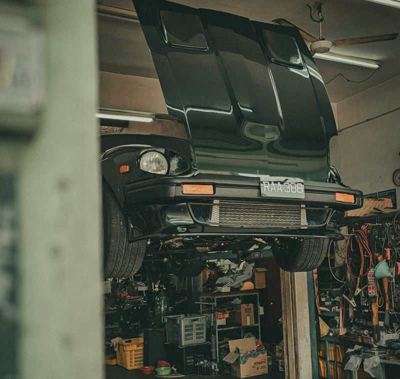
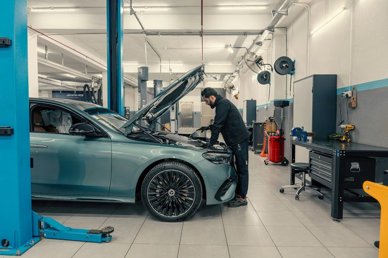
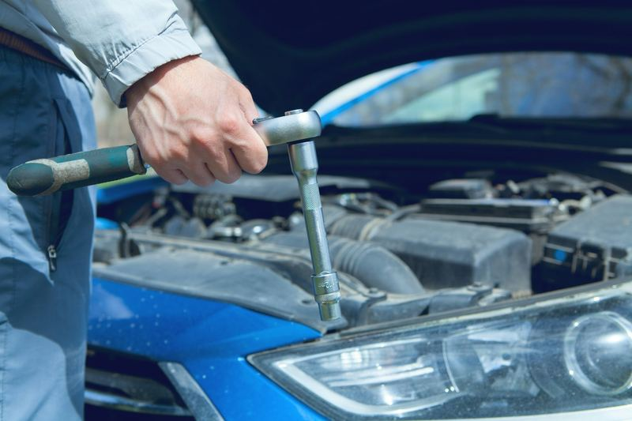

Servis a opravy
Výměna oleje a filtrů, brzdy, podvozek a opravy, které auto zrovna potřebuje.
Libor Jiráska, Smetanova 20a. Autoservis a pneuservis: opravy aut, diagnostika, geometrie, servis klimatizace a pneuservis. Platit můžete i kartou.
Po–čt 8–16, pá 8–15

Klepněte na ni a hned víte, co znamená a jestli můžete jet dál.
Opatrně ano
Řídicí jednotka našla závadu motoru nebo emisí. Jeďte opatrně a přijeďte na diagnostiku. Když kontrolka bliká, raději zastavte.
Objednat diagnostikuBěžný servis i opravy, pneumatiky a nastavení geometrie.

Výměna oleje a filtrů, brzdy, podvozek a opravy, které auto zrovna potřebuje.

Přečteme chyby z řídicí jednotky a najdeme příčinu.

Přezutí, vyvážení a nastavení geometrie.

Plnění a servis klimatizace, aby v létě chladila.
„Mechanici ochotní, umějí komunikovat, vysvětlit věci a poradit.“
zákazník na Firmy.cz
„Výborná komunikace, kvalita opravy. Cena opravy se dala akceptovat.“
zákazník na Firmy.cz
„Byli ochotní se mi věnovat i po jejich pracovní době.“
zákazník na Firmy.cz